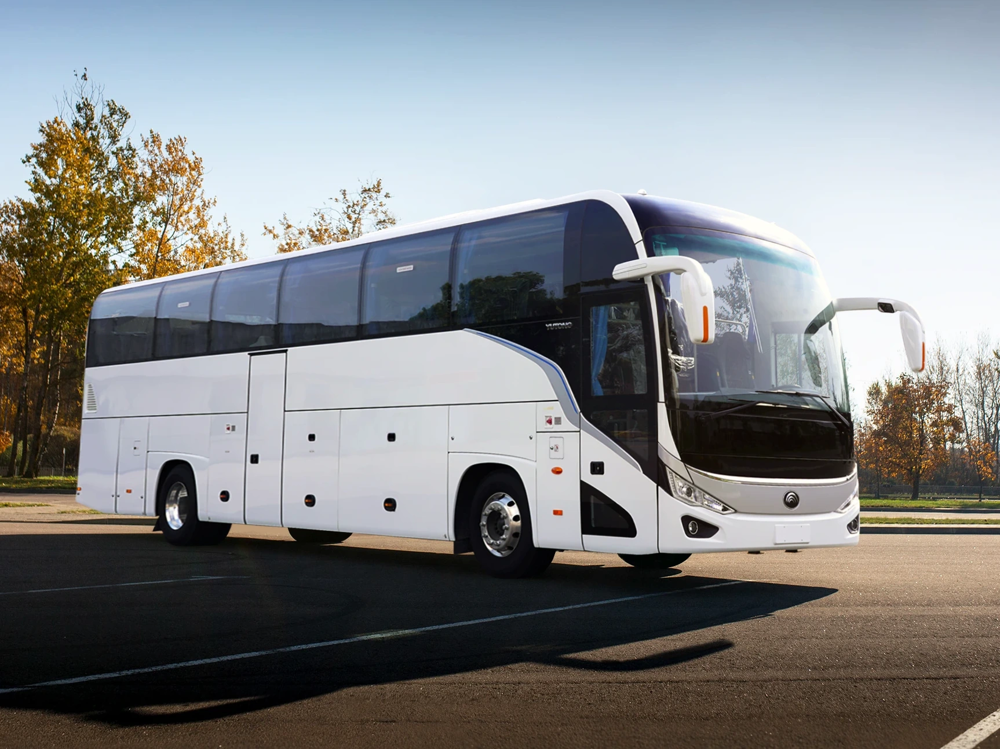

Ласкаво просимо!

Цей сайт присвячений автобусному сполученню між Вінницею та Києвом.
Тут можна дізнатися про розклад автобусів, автовокзали та підготовку до подорожі.
Що є на сайті?
- Розклад і маршрути автобусів.
- Інформація про автовокзали.
- Корисні поради пасажирам.